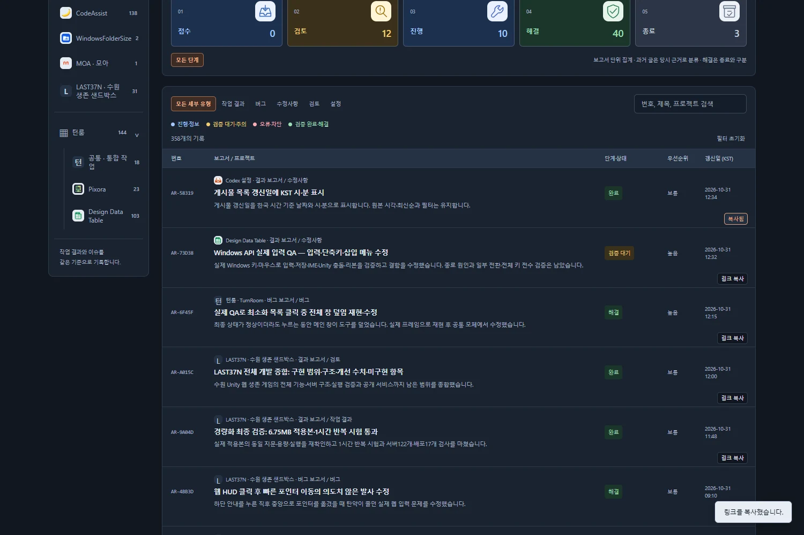
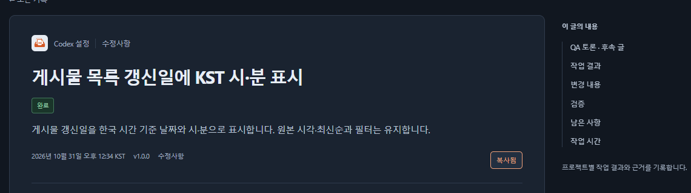

Codex 설정수정사항
Codex 설정수정사항게시물·게시판 목록에 링크 복사 추가
완료상세·보고서 목록·QA 토론·작업 메뉴얼에서 링크를 복사합니다. 게시판 주소에는 현재 프로젝트·분류·검색 조건이 포함됩니다.
작업 결과
게시물은 링크 복사로 해당 글의 주소를, 게시판 상단은 게시판 링크 복사로 현재 필터 주소를 복사합니다. 복사 클릭은 글 이동과 분리했습니다.

메인 게시판 · QA 토론 · 작업 메뉴얼 · 이번 완료 기록
변경 내용
적용 내용
보고서·버그 목록의 각 행, QA 토론·작업 메뉴얼 카드, 공통 게시물 상세에 링크 복사를 추가했습니다. 각 게시판 상단에는 현재 필터의 주소를 복사하는 버튼을 배치했습니다.
목록 행 링크 안에 버튼을 중첩하지 않고 별도 버튼으로 구현해 키보드 조작·글 이동을 구분합니다. 복사 성공 시 복사됨과 상태 안내를 표시합니다. Clipboard API가 없거나 거부되면 대체 복사를 시도하고, 모두 제한되면 주소를 선택할 수 있는 창을 띄웁니다. 실패를 성공으로 표시하지 않습니다.
메인 목록의 프로젝트·분류·단계·검색 조건을 URL에 저장·복원하도록 추가했습니다. 토론·메뉴얼의 기존 필터 URL도 공유할 수 있습니다.

검증
실제 Chrome의 클립보드에 기록된 URL을 다시 읽어 검증했습니다. 브라우저 검사28개 통과: 행 클릭 분리, 각 카드·상세 URL, 게시판 필터 URL과 새로 열기 복원, 필터로 숨긴 행의 복사 버튼 숨김, Enter 키, 실제 대체 복사, 권한 거부·직접 선택 창,390px 화면과 중첩 버튼 없음입니다. 페이지 오류0개입니다. 브라우저 근거.
배포 후 실제 공개 사이트에서도10개 검사가 통과했습니다. 게시물·토론·메뉴얼의 URL과 필터 공유 주소를 실제 클립보드로 확인했습니다. Actions41165582316 성공과 공개 근거를 확인했습니다. 공개 근거.
기존 자동 검사37개가 통과했습니다. 최초 실행에서는 Windows 복제본의 기존 Markdown 템플릿 CRLF를 LF 전용 검사 정규식이 읽지 못해1개 실패했으며, 복제본 템플릿의 줄바꿈만 정규화한 뒤37개 전부 통과했습니다. 실패와 재검증은 메뉴얼 Q01/Q02에 보존했습니다. 공통 HTML·링크 검사도 통과했습니다.
실제 공개 캡처를 글자 손상 없는 무손실 WebP로 압축했습니다. list-copy.webp: 117295→45894B (1500×1000), detail-copy.webp: 22041→8578B (1140×320). 직접 표시 품질을 확인했습니다.
남은 사항
브라우저가 모든 자동 복사를 차단할 때는 직접 주소를 복사해야 합니다. 주소 선택 창을 제공합니다. 다른 대화의 로컬 미완성 변경은 게시하지 않고 격리 저장소에서 처리했습니다. 교훈 검토: 변경 없음 — 기존 실제 동작 검증·실패 보존·명시적 게시 경로 대조 지침을 적용했습니다.
작업 시간
- 제안 시간: 5~8분
- 실제로 완료된 시간: 시작2026-10-31 12:38:41 KST · 구현·공개 기능 검증 2026-10-31T03:46:01.871Z · 7.3분. 결과 보고서 배포 완료 시각은 채팅 최종 보고에 표기합니다.
- XERJ: 미사용 — 제공된 XERJ 연결·검색 스크립트가 없어 rg와 현재 소스로 확인했습니다.